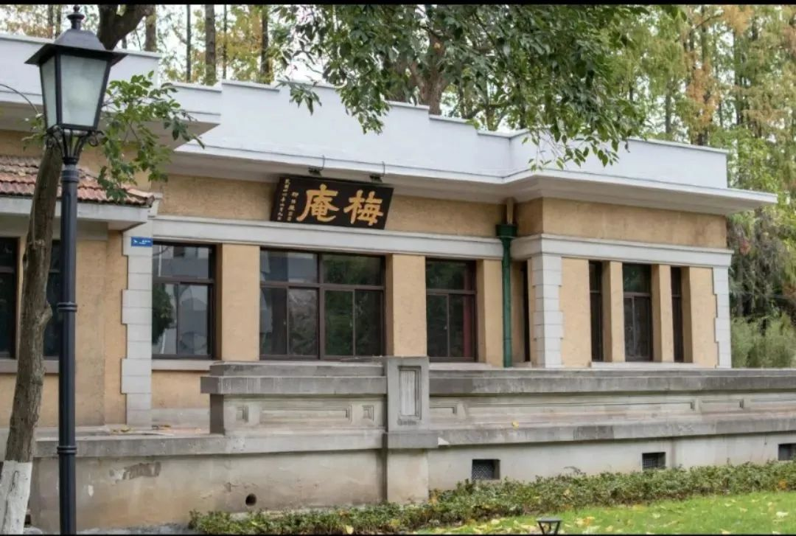
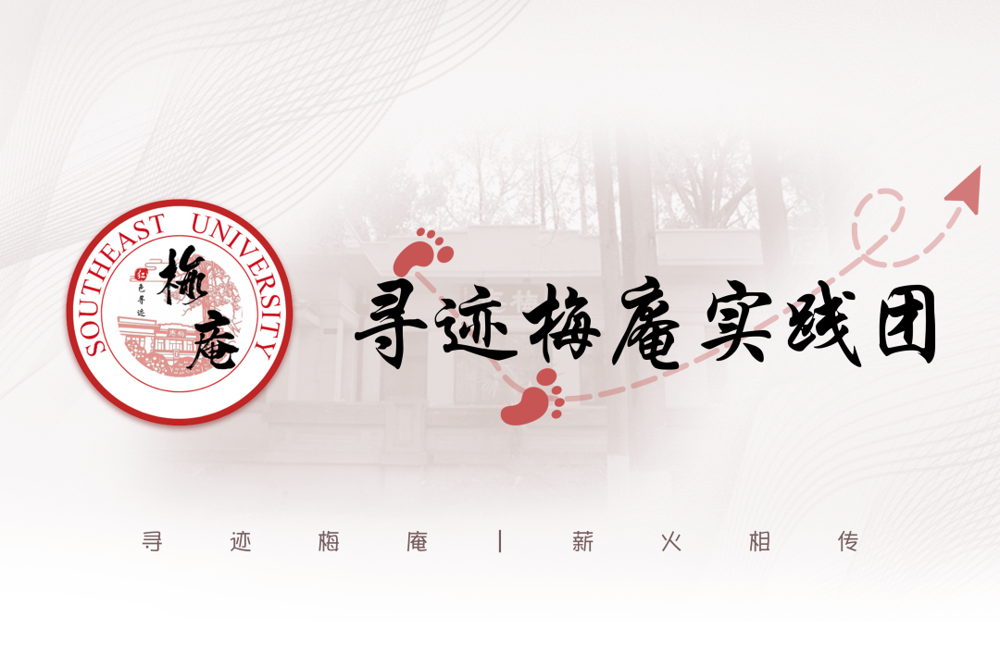
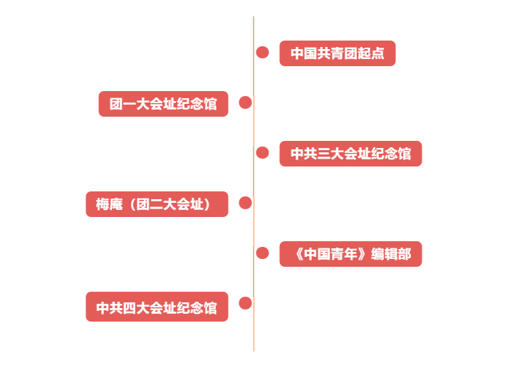

东南大学仪器科学与工程学院 寻迹梅庵实践团
官方微信
官方微博
寻 迹 梅 庵 ，薪 火 相 传
2023年是全面贯彻党的二十大精神的开局之年，也是中国社会主义青年团第二次全国代表大会胜利召开100周年。“团二大”在东南大学梅庵的召开，是中国高校和中国青年在党的领导下参与近代革命进程，坚定不移跟党走的典型代表，也是学校历史上的红色宝藏。
初心照梅庵，永远跟党走。在这样具有重要历史意义的时间节点下，做好“团二大”相关史料收集、整理、考证工作，跨越百年时空回溯“团二大”历史，重温跟党走初心，对于指导新时代青年工作，引领当代青年坚定不移听党话、跟党走具有重大现实意义。
时代各有不同,青春一脉相承。2023年2月，教育部思政司提出要打造一批“数字化”的高校红色资源，进一步强化数字赋能。作为新时代东大学子，应当用好、用活学校宝贵的红色资源，让革命薪火、红色精神代代相传。
在此背景下，东南大学仪器科学与工程学院“寻迹梅庵”实践团将再次启程，在2022年追寻“团二大”代表红色足迹的基础上，继续深入挖掘“团二大”历史的“前因后果”和时代细节，并以数字化赋能的方式跨越时空对话历史，将这段光辉岁月生动呈现。
1.“团二大”历史资料收集
通过走访会议旧址，依托互联网、图书馆馆藏文献等第资料深入“团二大”历史研究；继承往年社会实践团队整合的优秀资源，对“团二大”历史信息进行高度凝练、高度集成，提取要点，为后续实践过程打下坚实基础。
2.挖掘“团二大”历史的前因后果
依托学校资源，联系相关纪念馆工作人员或团史专家，深挖“团二大”召开前后的有关历史事件，补充完善东南大学“团二大”历史资料库，明晰“团二大”前因后果的历史逻辑，搭建清晰的历史脉络，继而确定调研主线和实践路线，为实地调研奠定基础。
以“团二大”的“前因后果”为主线，探寻“是什么影响了团二大，而团二大又影响了什么”，对“团二大”召开前后的重大会议或事件旧址进行调研，挖掘当时社会环境、政治形势、人物关系等对“团二大”的影响，进而深入探究其历史价值以及对中国青年运动的意义。
路线设计采取以历史事件发生时间为主导，从共青团的发源地，到会议前期对“团二大”起到重要影响的诸多会议旧址，再到“团二大”会址东南大学梅庵，以及会议后期受到影响的重要历史事件旧址，将整个“团二大”历史的前因后果串联起来。
1.开展长期合作，做新时代梅庵“代言人”
团队将基于前期成果和资源与梅庵纪念馆建立合作关系，正式成为梅庵的“代言人”，服务梅庵长期建设，并将持续致力于讲好“团二大”和红色梅庵故事，保护好、建设好、利用好“团二大”遗址、史料，使以梅庵为中心的纪念场馆成为团员青年学习培训教育的重要场所。
2.建立实践基地，构建“团二大”宣传联动网络
实践团计划在“中共三大”会址、《中国青年》编辑部旧址等与“团二大”召开息息相关的场所建立东南大学大学生社会实践基地，联系当地有关负责部门建设“团二大”主题实践园地，构建“团二大”宣传联动网络。
1.拍摄纪录片《寻迹梅庵，薪火相传》
基于调研报告，以及在前期准备工作之下所形成的视频脚本，将实地调研“团二大”前因后果的过程详细拍摄下来，通过“时空复现”，完整梳理那段历史及其前后事件，最终形成一部完备阐述从“团二大”前期事件，到“团二大”召开，再到“团二大”后期影响事件的纪录片——《寻迹梅庵，薪火相传》。
2.搭建“团二大”学习云平台，打造“智慧梅庵”
团队将立足学科专业特色，采用“数字化”手段，建设“团二大”学习云平台，在平台上构建“简化三维梅庵模型”、“扫码AI电子解说”、“智能数字展馆导览”、“团二大历史论坛”等各类模块，打造“沉浸式”、“体验式”、“互动式”三位一体的学习线路，丰富“团二大”的史料内容供给，创新“团二大”学习形式，唤醒当代青年人的“梅庵记忆”。
一个时代有一个时代的主题，一代人有一代人的使命。“团二大”和红色梅庵的故事已传承百年，这是历史的接续，也是一代代东大人的接力。
在如今数字化时代下，“寻迹梅庵”实践团将秉持东大人“薪火相传”的精神内核，结合学科专业特色，以数字化手段将“团二大”红色资源、红色故事进行具象化表达，用青年视角、青年媒介跨越时空对话历史，让“团二大”的时代生机和历史意义行深致远，让“永远跟党走”的初心在新时代影响更多的中国青年，献礼“团二大”胜利召开100周年。